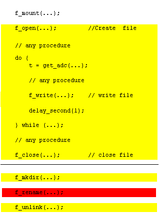

FatFsモジュール アプリケーション・ノート
- ポーティングの際に配慮すべきこと
- 限界値
- メモリ使用量
- モジュール・サイズの縮小
- 長いファイル名
- 日本語ファイル名の大文字変換
- Unicode入出力への対応
- リエントランシー
- 多重ファイル・アクセス
- 効率的なファイル・アクセス
- フラッシュ・メモリの特性への配慮
- クリチカル・セクション
- APIの拡張的使用例
- FatFsのライセンスについて
ポーティングの際に配慮すべきこと
移植の際の前提条件
FatFsモジュールは移植性に関して次の点を前提としています。
- 処理系はANSI C準拠であること。
FatFsモジュールはANSI C(C89)準拠で記述されているので、普通のCコンパイラなら特に処理系依存になる点はありません。
- char/short/longのサイズは、それぞれ8/16/32ビットで、intは16または32ビットであること。
これについても、まっとうな処理系なら問題ないはずです。FatFsモジュールで使用されるサイズを明示する整数型が integer.h 内で定義されていますが、既存の定義と衝突した場合はユーザによって解決されなければなりません。
システム構成
下に示す依存関係図は、FatFsモジュール利用の組み込みシステムにおける代表的な構成を示します。

ユーザの作成する関数
必要なのは FatFsモジュールの要求するディスク関数を用意することだけで、それ以外にすることはありません。既に動作しているディスク関数があるなら、その APIを FatFsに合わせるかグルー関数でつなぐだけで済みますが、無い場合はほかから移植するか最初から書くかする必要があります。定義されている全ての関数が常に必要なわけではありません。例えば、リード・オンリー構成では書き込み系関数は必要ありません。次の表に構成オプションと要求される関数の対応を示します。
| ユーザ作成関数 | 必要となる条件 | 備考 |
|---|
disk_initialize
disk_status
disk_read | 常時 | ffsample.zip (サンプル)
その他web上に多数 |
disk_write
get_fattime
disk_ioctl (CTRL_SYNC) | _FS_READONLY == 0 |
disk_ioctl (GET_SECTOR_COUNT)
disk_ioctl (GET_BLOCK_SIZE) | _USE_MKFS == 1 |
| disk_ioctl (GET_SECTOR_SIZE) | _MAX_SS >= 1024 |
| disk_ioctl (CTRL_ERASE_SECTOR) | _USE_ERASE == 1 |
ff_convert
ff_wtoupper | _USE_LFN >= 1 | option/cc*.c |
ff_cre_syncobj
ff_rel_grant
ff_req_grant
ff_del_syncobj | _FS_REENTRANT == 1 | option/syscall.c (サンプル) |
ff_mem_alloc
ff_mem_free | _USE_LFN == 3 |
限界値
- FATタイプ: FAT12, FAT16, FAT32。
- 同時オープン・ファイル数: 無制限。(利用可能メモリによる)
- ボリューム数: 最大 10。
- ファイル・サイズ: FAT規格に依存。(最大 4G-1バイト)
- ボリューム・サイズ: FAT規格に依存。(最大 2Tバイト(512バイト/セクタ時))
- クラスタ・サイズ: FAT規格に依存。(最大 64Kバイト(512バイト/セクタ時))
- セクタ・サイズ: FAT規格に依存。(最大 4Kバイト)
メモリ使用量
次の表にいくつかのターゲットにおけるメモリ使用量の例を示します。テスト時の構成オプションはその下の通りです。数値の単位はバイトで、Vはボリューム数、Fは同時オープン・ファイル数を示します。コンパイラの最適化オプションはコード・サイズとしています。
| ARM7
32bit | ARM7
Thumb | CM3
Thumb-2 | AVR | H8/300H | PIC24 | RL78 | V850ES | SH-2A | RX600 | IA-32 |
|---|
| Compiler | GCC | GCC | GCC | GCC | CH38 | C30 | CC78K0R | CA850 | SHC | RXC | VC6 |
| _WORD_ACCESS | 0 | 0 | 0 | 1 | 0 | 0 | 0 | 1 | 0 | 1 | 1 |
| text (Full, R/W) | 10591 | 7119 | 6565 | 13240 | 10864 | 11619 | 13192 | 8031 | 8960 | 5977 | 7856 |
| text (Min, R/W) | 6671 | 4595 | 4293 | 8512 | 7232 | 7674 | 9033 | 5235 | 5768 | 3923 | 5129 |
| text (Full, R/O) | 4695 | 3121 | 2861 | 6218 | 5162 | 5466 | 6418 | 3799 | 3964 | 2847 | 3687 |
| text (Min, R/O) | 3523 | 2463 | 2275 | 4558 | 4058 | 4212 | 4948 | 2959 | 3096 | 2199 | 2857 |
| bss | V*4 + 2 | V*4 + 2 | V*4 + 2 | V*2 + 2 | V*4 + 2 | V*2 + 2 | V*2 + 2 | V*4 + 2 | V*4 + 2 | V*4 + 2 | V*4 + 2 |
Work area
(_FS_TINY == 0) | V*560 +
F*550 | V*560 +
F*550 | V*560 +
F*550 | V*560 +
F*544 | V*560 +
F*550 | V*560 +
F*544 | V*560 +
F*544 | V*560 +
F*544 | V*560 +
F*550 | V*560 +
F*550 | V*560 +
F*550 |
Work area
(_FS_TINY == 1) | V*560 +
F*36 | V*560 +
F*36 | V*560 +
F*36 | V*560 +
F*32 | V*560 +
F*36 | V*560 +
F*32 | V*560 +
F*32 | V*560 +
F*36 | V*560 +
F*36 | V*560 +
F*36 | V*560 +
F*36 |
FatFs R0.10 options:
_FS_READONLY 0 (R/W), 1 (R/O)
_FS_MINIMIZE 0 (Full function), 3 (Minimized function)
_USE_STRFUNC 0 (Disable string functions)
_USE_MKFS 0 (Disable f_mkfs function)
_USE_FORWARD 0 (Disable f_forward function)
_USE_FASTSEEK 0 (Disable fast seek feature)
_CODE_PAGE 932 (Japanese Shift-JIS)
_USE_LFN 0 (Disable LFN)
_MAX_SS 512 (Fixed sector size)
_FS_RPATH 0 (Disable relative path feature)
_FS_LABEL 0 (Disable volume label functions)
_VOLUMES V (Number of logical drives to be used)
_MULTI_PARTITION 0 (Single partition per drive)
_FS_REENTRANT 0 (Disable reentrancy)
_FS_LOCK 0 (Disable file lock control)
モジュール・サイズの縮小
次の表は構成オプションの設定値によりどの機能が削除されるかを示します。
| Function | _FS_MINIMIZE | _FS_READONLY | _USE_STRFUNC | _FS_RPATH | _FS_LABEL | _USE_MKFS | _USE_FORWARD | _MULTI_PARTITION |
| 0 | 1 | 2 | 3 | 0 | 1 | 0 | 1/2 | 0 | 1 | 2 | 0 | 1 | 0 | 1 | 0 | 1 | 0/1 | 2 |
| f_mount | | | | | | | | | | | | | | | | | | | |
| f_open | | | | | | | | | | | | | | | | | | | |
| f_close | | | | | | | | | | | | | | | | | | | |
| f_read | | | | | | | | | | | | | | | | | | | |
| f_write | | | | | | x | | | | | | | | | | | | | |
| f_sync | | | | | | x | | | | | | | | | | | | | |
| f_lseek | | | | x | | | | | | | | | | | | | | | |
| f_opendir | | | x | x | | | | | | | | | | | | | | | |
| f_closedir | | | x | x | | | | | | | | | | | | | | | |
| f_readdir | | | x | x | | | | | | | | | | | | | | | |
| f_stat | | x | x | x | | | | | | | | | | | | | | | |
| f_getfree | | x | x | x | | x | | | | | | | | | | | | | |
| f_truncate | | x | x | x | | x | | | | | | | | | | | | | |
| f_unlink | | x | x | x | | x | | | | | | | | | | | | | |
| f_mkdir | | x | x | x | | x | | | | | | | | | | | | | |
| f_chmod | | x | x | x | | x | | | | | | | | | | | | | |
| f_utime | | x | x | x | | x | | | | | | | | | | | | | |
| f_rename | | x | x | x | | x | | | | | | | | | | | | | |
| f_chdir | | | | | | | | | x | | | | | | | | | | |
| f_chdrive | | | | | | | | | x | | | | | | | | | | |
| f_getcwd | | | | | | | | | x | x | | | | | | | | | |
| f_getlabel | | | | | | | | | | | | x | | | | | | | |
| f_setlabel | | | | | | x | | | | | | x | | | | | | | |
| f_forward | | | | | | | | | | | | | | | | x | | | |
| f_mkfs | | | | | | x | | | | | | | | x | | | | | |
| f_fdisk | | | | | | x | | | | | | | | x | | | | x | |
| f_putc | | | | | | x | x | | | | | | | | | | | | |
| f_puts | | | | | | x | x | | | | | | | | | | | | |
| f_printf | | | | | | x | x | | | | | | | | | | | | |
| f_gets | | | | | | | x | | | | | | | | | | | | |
長いファイル名
FatFsモジュールはR0.07から長いファイル名(LFN)をサポートしました。ファイルに付けられた2つの異なる名前(短いファル名と長いファイル名)は、f_readdir()を除くファイル操作関数において透過です。LFN機能を有効にするには、_USE_LFNを1,2または3に設定し、Unicode変換関数ff_convert(), ff_wtoupper()をプロジェクトに追加します。これらの関数は、option/cc*.cに含まれています。LFN機能は、加えてある程度のワーク・エリア(LFN操作バッファ)を必要とします。バッファ長は使用できるメモリに応じて_MAX_LFNオプションで構成されることができます。LFNの長さは最大255文字に達するので、LFN完全対応のためには_MAX_LFNは255に設定されるべきです。与えられたファイル名に対してバッファ長が不足した場合、ファイル関数はFR_INVALID_NAMEで失敗します。
何らかのリエントラント状態の下でLFN機能を使用する場合は、_USE_LFNは2または3に設定されなければなりません。この場合、ファイル関数はバッファをスタックやヒープに確保します。バッファ・サイズは、(_MAX_LFN + 1) * 2バイトになるので、スタック等のサイズはそれを考慮した十分なサイズでなければなりません。
LFN cfg on ARM7
| コードページ | コードサイズ[bytes] |
|---|
| SBCS | +3721 |
| 932(Shift-JIS) | +62609 |
| 936(GBK) | +177797 |
| 949(Korean) | +139857 |
| 950(Big5) | +111497 |
LFN機能の上手な使い方は、それを使わないということです。実際、組み込み用途ではLFN機能がどうしても必要になるということはほとんど無いはずです。LFNを有効にすると、選択されたコード・ページに応じてモジュール・サイズが増大されます。右の表に各コード・ページにおけるLFNを有効にしたときのモジュール・サイズの違いを示します。特に、CJK地域では数万の文字が使われていますが、不幸なことにそれは巨大なOEM－Unicode相互変換テーブルを要求し、モジュール・サイズは劇的に増大されます。その結果、それらのコード・ページにおいてLFNを有効にしたFatFsモジュールは、AVRを含む殆どの8ビット・マイコンにインプリメントされることができません。
LFN機能のハードルはそれだけではありません。マイクロソフト社はFATファイル・システムについていくつかの特許を保有しています。いずれもLFN機能の実装に関するもので、その利用に対して$0.25/unitのライセンス料を要求しています。このため、商用製品でLFN機能を利用するときは、最終仕向地によってはライセンスが必要になります。最近のFAT32ドライバの多くはLFN機能を含んでいるため、それらの使用に当たってライセンスが必要になりますが、FatFsではLFN機能を構成オプションで任意にON/OFFできるため、無効にしてライセンス問題を回避することもできます。
日本語ファイル名の大文字変換
CP932(Shift_JIS)でかつ非LFN構成のときは、拡張文字の小文字(2バイト英字・キリル文字・ギリシャ文字)に対して大文字変換を行わず、小文字のままSFNエントリに記録・検索されます(日本語MSDOS仕様)。このため、非LFN構成で全角小文字を含むファイルを作成すると、NT系Windowsでそのファイルを開けなくなります。LFN構成では大文字変換を行います(NT系Windows仕様)。
Unicode入出力への対応
FatFs API上におけるファイル名等の文字列データの入出力は、デフォルトではANSI/OEMコードで行われますが、これをUnicode(UTF-16)に切り替えることもできます(_LFN_UNICODEオプションで設定)。つまり、これはFatFsがLFN機能に完全対応していることを意味します。Unicodeのファイル名に関する詳細は、ファイル名を参照してください。
リエントランシー
互いに異なるボリュームに対するファイル操作はリエントラントで、常に同時平行に動作できます。同じボリュームに対してはデフォルトではリエントラントではありませんが、_FS_REENTRANTオプションでリエントラント(スレッド・セーフ)にすることはできます。この場合、OS依存の同期オブジェクト操作関数ff_cre_syncobj(), ff_del_syncobj(), ff_req_grant(), ff_rel_grant()もまたプロジェクトに追加されなければなりません。サンプル・コードと解説はoption/syncobj.cにあります。
この場合、あるタスクがボリュームを使用中に他のタスクからそのボリュームに対するファイル関数が呼び出されると、そのアクセスは先のタスクがファイル関数を抜けるまでブロックされます。もし、待ち時間が_TIMEOUTで指定された期間を越すと、その関数はFR_TIMEOUTでアボートします。いくつかのRTOSではタイムアウト機能はサポートされないかも知れません。
ひとつの例外がf_mount(), f_mkfs(), f_fdisk()にあります。これらの関数は同じボリューム(または関連する物理ドライブ)に対してリエントラントではありません。これらの関数を使用するときは、アプリケーション・レベルで排他制御しなければなりません。
注: このセクションはFatFsモジュールそれ自体のリエントランシーについて説明しています。その下位のディスクI/Oモジュールのリエントランシーに関しては何の前提もありません。
多重ファイル・アクセス
FatFsモジュールではデフォルトでは多重アクセス制御機能をサポートしていません。ファイルに対する多重アクセスは、そのアクセス・モードによって制限されます。一つのファイルに対する多重オープンは、それらが全てリード・モードのときに限って許可されます。書き込みモードを含む多重オープン、また開かれているファイルに対するリネームや削除を行ってはなりません。さもないと、そのボリュームのFAT構造が破壊される可能性があります。
_FS_LOCKに1以上の値(値は同時に管理できるファイル数)をセットすることで多重アクセス制御機能が有効になり、ファイル単位のアクセス制御を自動で行うこともできます。この場合、上記のルールを破ったオープン・リネーム・削除を試みると、その関数はFR_LOCKEDで失敗します。また、_FS_LOCKを越える数のファイルやディレクトリを同時にオープンしようとすると、FR_TOO_MANY_OPEN_FILESで失敗します。
効率的なファイル・アクセス
小規模な組込システムでのファイルの読み書きにおける効率の良いアクセスのため、アプリケーション・プログラマはFatFsモジュールの中でどのような処理が行われているか考慮すべきです。ストレージ上のデータはf_read()により次のシーケンスで転送されます。
図1. セクタ・ミスアラインド・リード (ショート)

図2. セクタ・ミスアラインド・リード (ロング)

図3. セクタ・アラインド・リード

ファイルI/Oバッファはセクタの一部のデータを読み書きするためのセクタ・バッファを意味します。セクタ・バッファは、それぞれのファイル・オブジェクト内のプライベート・セクタ・バッファまたはファイル・システム・オブジェクト内の共有セクタ・バッファのどちらかです。バッファ構成オプションの_FS_TINYは、データ転送にどちらを使うかを決定します。タイニー・バッファ(1)が選択されるとデータ・メモリの消費はそれぞれのファイル・オブジェクトで512バイト減少されます。この場合、FatFsモジュールはファイル・データの転送とFAT/ディレクトリ・アクセスにファイル・システム・オブジェクト内のセクタ・バッファだけを使用します。タイニー・バッファの欠点は、セクタ・バッファにキャッシュされたFATデータがファイル・データの転送により失われ、クラスタ境界の毎にリロードされなければならないことです。でも、悪くない性能と少ないメモリ消費の視点から多くのアプリケーションに適するでしょう。
図1はセクタの一部のデータがファイルI/Oバッファを経由で転送されることを示します。図2に示される長いデータの転送では、転送データの中間の1セクタまたはそれ以上のセクタにまたがる転送データがアプリケーション・バッファに直接転送されています。図3は転送データ全体がセクタ境界にアライメントされている場合を示しています。この場合、ファイルI/Oバッファは使用されません。直接転送においては最大の範囲のセクタがdisk_read()で一度に読み込まれますが、クラスタ境界を越えるマルチ・セクタ転送はそれが隣接であっても行われません。
このように、セクタにアライメントしたファイルの読み書きへの配慮はバッファ経由のデータ転送を避け、読み書き性能は改善されるでしょう。その効果に加え、タイニー構成でキャッシュされたFATデータがファイル・データの転送によりフラッシュされず、非タイニー構成と同じ性能を小さなメモリ・フットプリントで達成できます。
フラッシュ・メモリの特性への配慮
HDDなどのディスク・メディアとは異なり、SDCやCFCなどのフラッシュ・メモリ・メディアの性能を引き出すには、その特性を意識した制御が必要になります。
マルチ・セクタ書き込み
図6. マルチ/シングル・セクタ・ライトの比較

フラッシュ・メモリ・メディアの書き込み速度はシングル・セクタ書き込みの時に最も低いものになり、一回のトランザクションで転送されるセクタ数が大きくなるほど書き込み速度は向上します。この効果はバス速度が高速になるほど顕著で、10倍以上の差が現れることも珍しくありません。書き込みトランザクションの回数はまた、メディアの寿命にも影響してきます。このため、アプリケーションはなるべく大きなブロック(クラスタ・サイズまたは2の累乗セクタ境界にアライメントした)で読み書きを行う必要があります。もちろん、アプリケーションからメディアに至る全てのレイヤがマルチ・セクタ転送に対応していないと意味がありません。残念ながら、既存のオープン・ソースのドライバの多くはマルチ・セクタ転送に未対応です。なお、FatFsモジュールおよびそれ用のサンプル・ドライバはマルチ・セクタ転送に対応しています。
明示的なメモリ消去
通常のファイル消去では、記録されたデータに対して何らかの制御が行われるわけではなく、単にFAT上に未使用クラスタとして記録されているだけです。このため、ファイルが消去されたあともそれらは有効なメモリ・ブロックとしてフラッシュ・メモリ上に残ります。そこで、ファイルを消去するとき、占有していたデータ・セクタを明示的に消去(つまり未使用ブロックにする)することにより、メディア内の空きブロックを増やすことができます。これにより、次にそのブロックに書き込むときの消去動作が無くなり、書き込み性能が向上する可能性があります。また、ウェアレベリングに使えるブロックが増え、メディアの耐久性も向上するかも知れません。この機能を有効にするには、構成オプションの_USE_ERASEに1を設定します。これはフラッシュ・メモリ・メディアの内部動作に期待した制御なので、効果があるとは限りません。また、ファイル消去の時間が延びることも考慮に入れるべきです。
クリチカル・セクション
ストレージ上のFAT構造を操作している途中で、停電、不正なメディアの取り外し、回復不能なデータ・エラー等の障害が発生すると、処理が中途半端な状態で中断され、その結果としてFATボリュームの構造が破壊される可能性があります。次にFatFsモジュールにおけるクリチカル・セクションと、その間の障害により起きうるエラーの状態を示します。
図4. 長いクリチカル・セクション

図5. 最小化したクリチカル・セクション

赤で示したセクションを実行中に障害が発生した場合、クロス・リンクが発生して操作対象のファイル・ディレクトリが失われる可能性があります。黄色で示したセクションを実行中に障害が発生した場合、つぎのうちいずれかまたは複数の結果が生じる可能性があります。
- 書き換え中のファイルのデータが破壊される。
- 追記中のファイルがオープン前の状態に戻る。
- 新規に作成されたファイルが消える。
- 新規または上書きで作成されたファイルの長さがゼロになって残る。
- ロストチェーンの発生によりボリュームの利用効率が悪化する。
いずれも書き込み中や操作の対象でないファイルには影響はありません。これらのクリチカル・セクションは、ファイルを書き込みモードで開いている時間を最小限にするか、f_sync()を適宜使用することで図5のようにリスクを最小化することができます。
FatFsのライセンスについて
ソース・ファイルのヘッダにライセンス条件が記述されているので、利用の際はそれに従うこと。英語を読めない方のために以下に日本語訳を示しておきます。
/*----------------------------------------------------------------------------/
/ FatFs - FAT file system module R0.10 (C)ChaN, 2013
/-----------------------------------------------------------------------------/
/ FatFsモジュールは、小規模な組み込みシステム向けの汎用FATファイルシステム・
/ モジュールです。これはフリー・ソフトウェアとして、教育・研究・開発のために
/ 以下のライセンス・ポリシーの下で公開されています。
/
/ Copyright (C) 2013, ChaN, all right reserved.
/
/ * FatFsモジュールはフリー・ソフトウェアであり、また無保証です。
/ * 用途に制限はありません。あなたの責任の下において、個人的・非営利的な
/ ものから商用製品の開発に及ぶ目的に使用・改変・再配布することができます。
/ * ソース・コードを再配布するときは、上記の著作権表示を保持しなければなりません。
/
/-----------------------------------------------------------------------------/
要するにFatFsはタダで自由に使えるということです。ソース・コードを再配布するときは、このブロックをそのまま保持しておくこと。このようにFatFsはBSDライクなライセンスとしていますが、一つ大きな違いがあります。特に組み込み用途での利用価値を高めるため、バイナリ形式(ソース・コードを含まない形式全て)での再配布については、条件は設けていません。その場合は、FatFsおよびそのライセンス文書についてはドキュメントに明記してもしなくてもかまいません。これは、一条項BSDライセンスと等価ということです。もちろんGNU GPLプロジェクトとも共存可能です。何らかの変更を加えて再配布する際は、矛盾しない他のライセンス(GNU GPLや修正BSDライセンスなど)に変更することも可能です。